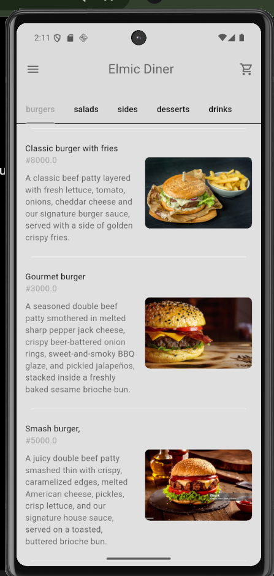
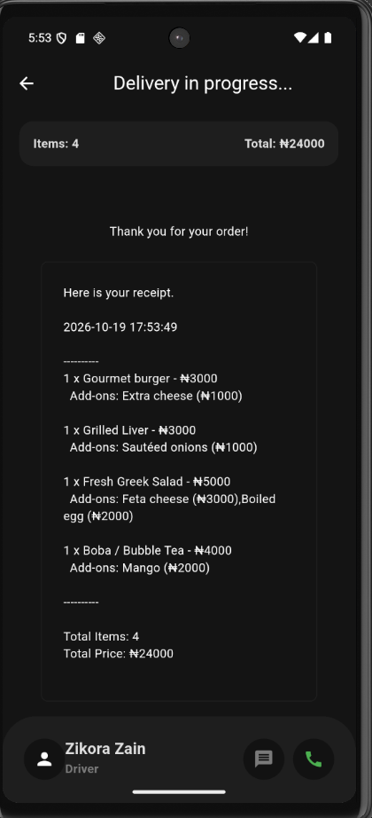

01 / MOBILE APPFLUTTER + DART


PROJECT
MOBILE APPLICATION
Food Delivery App
A Flutter food ordering app with menu categories, add-ons, a cart, a mock card checkout, a delivery progress screen with receipt, and a light and dark theme. Built with Provider for state management.